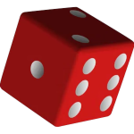
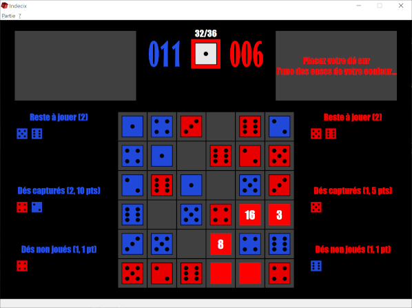
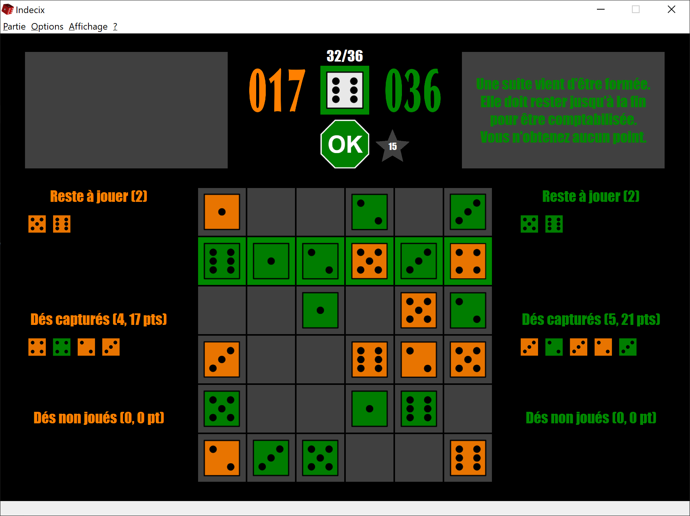
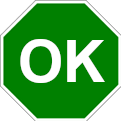
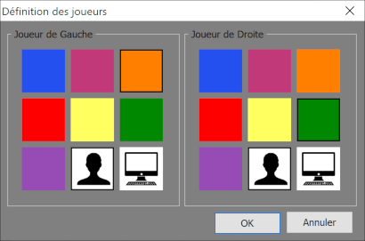

Indecix : règle du jeu et utilisation

Sommaire
Remarque : N’hésitez pas à utiliser l’outil de recherche de votre navigateur, toute l’aide est dans cette unique page !
Présentation rapide
Indécix est un jeu dans lequel chaque joueur a 18 dés à lancer et à poser chacun son tour sur une grille de 6 cases sur 6.
Selon le résultat du dé, la pose sur la grille comporte des contraintes et permet de capturer des dés propres comme adverses.
Une fois lancé, le dé doit être posé sur une case libre de la grille.
L’autre contrainte est qu’il ne doit pas être sur la même ligne ou la même colonne avec un dé ayant la même face.
Une capture de dés a lieu s’il existe un dé appelé borne de telle sorte que :
- il n’y a pas de cases vides entre le dé posé et la borne ;
- tous les dés situés sur la même ligne ou la même colonne et entre le dé posé et la borne, ont une face comprise entre celle du dé posé et celle de la borne, dans n’importe quel ordre.
Certaines situations après le lancer de dé ou la pose rapportent des points :
- Passer son tour par impossibilité de poser le dé rapporte un point à l’adversaire ;
- Capturer un dé rapporte autant de points que la face du dé s’il s’agit de l’un de ses propres dés et le double de points s’il s’agit d’un dé adverse ;
- Former une suite de six dés sur une même ligne ou une même colonne rapporte la somme des faces des dés alignés excepté le dé qui vient d’être posé et le score est doublé si la suite ne comporte que des dés propres.
Le vainqueur est le joueur ayant remporté le plus de points dès qu’il ne reste plus de dés à jouer.
Le plateau de jeu
 
Le plateau de jeu est composé de plusieurs zones :
- en bas au centre, la grille où l’on pose les dés ;
- de chaque côté de la grille, les dés qui ne sont pas sur la grille (restant à jouer, non joués et capturés) ;
- dans les coins supérieurs, les zones de messages destinés aux joueurs ;
- en haut au centre, le dé à lancer du joueur courant et en dessous le bouton d’action (« STOP » ou « OK »)
- de chaque côté du bouton d’action, les indicateurs de suites de dés.
Les cases
Les cases du plateau de jeu sont au nombre de 36 (six par six).
Au début du jeu, la grille est vide et à tour de rôle chaque joueur pose son dé une fois lancé, sur l’une des cases libres de la grille selon le résultat.
En effet, le dé ne peut pas être posé sur une ligne ou une colonne contenant déjà un dé avec la même face que celle du dé à poser, comme dans le jeu Sudoku.
Quand un dé est posé sur la grille, la face du dé posé est affichée sur la case choisie et le dé prend la couleur du joueur.
Si un joueur complète une ligne ou une colonne sans capturer de dés, le fond de tous les dés de la ligne ou de la colonne complète, prend la couleur du joueur.
Dès que la ligne ou la colonne est brisée à cause d’une capture, ce fond disparaît.
Les zones d’informations
Plusieurs informations sont affichées tout autour de la grille...
Zones de messages
Les messages destinés aux joueurs sont situés de part et d’autre des scores, du dé lancé et du bouton d’action.
Les messages affichés concernent le joueur dont c’est au tour de jouer : ils sont dans la couleur et du côté du joueur concerné.
Ils donnent des indications sur les actions à faire et rapporte le résultat de la pose du dé sur la grille.
Zones des scores
Le score principal de chaque joueur apparaît de chaque côté du dé à lancer.
Ce score est le cumul des scores intermédiaires...
- des dés capturés et non joués affichés de chaque côté de la grille ;
- des suites de dés formées dont le total est affiché de chaque côté du bouton d’action.
Les dés qui ne sont plus ou pas encore sur la grille, sont affichés de part et d’autre de celle-ci selon leur situation :
- en haut, sont affichés les dés qui n’ont pas encore été lancés ;
- en dessous apparaissent les dés capturés par le joueur ;
- en bas apparaissent les dés adverses qui n’ont pas pu être posé sur la grille.
Les dés sont de la couleur du joueur qui les a lancés.
À côté de chaque situation de dés est affiché entre parenthèses :
- le nombre de dés concernés ;
- le nombre de points rapportés (sauf pour les dés restant à jouer).
Zones du lancer de dé
Le dé à lancer est affiché en haut et au centre de l’écran, au dessus du bouton d’action.
La couleur du dé à lancer est celle du joueur dont c’est au tour de jouer.
Si le tour de jeu change, le dé a sa face qui change en permanence et le bouton d’action est à « STOP ».
Dès que le joueur appuie sur le bouton « STOP », la face du dé se fige...
- Si le dé peut être posé, un message informe que le joueur peut poser le dé sur la grille dont il doit choisir la case destination ;
- Si le dé ne peut être posé, un message en informe le joueur et c’’est au tour de l’adversaire de jouer qui doit appuyer sur « OK ».

Le tour courant est affiché au dessus du dé à lancer (nombre de tours entre 1 et 36).
Règle du jeu
Indécix est un jeu de hasard et de stratégie qui se joue à deux joueurs ayant chacun 18 dés à jouer.
La partie est terminée dès que tous les dés ont été joués.
Placer son dé
À tour de rôle, chaque joueur lance un dé et le place sur la grille selon une seule règle : il ne doit pas y avoir de dé sur la même ligne ou la même colonne ayant la même face que celle du dé posé.
Si le dé ne peut pas être placé, il est considéré comme « non joué » et rapporte un point à l’adverse.
Capturer des dés
Si le dé peut être posé, il peut permettre de « capturer » des dés propres comme adverses.
Pour ce faire, il faut d’abord déterminer les potentielles « bornes ».
Une borne est un dé situé sur la même ligne ou la même colonne que celle du dé posé de telle sorte qu’il n’existe aucune case vide entre elle et le dé posé.
Les dés situés entre le dé posé et la borne doivent tous avoir une face comprise entre celle du dé posé et celle de la borne pour être tous capturés, quel que soit l’ordre.
S’il existe un seul dé qui n’ait pas sa face comprise entre celle du dé posé et celle de la borne, aucun dé n’est capturé.
Pour chaque direction depuis le dé posé, on doit considérer uniquement la borne la plus éloignée qui permette de capturer des dés.
La capture rapporte des points au joueur qui a placé son dé : autant de points que la face du dé capturé s’il lui est propre, mais le score double s’il est adverse !
Former une suite
Compléter une ligne ou une colonne de la grille en posant son dé, rapporte des points : la somme des faces de tous les dés de la ligne ou de la colonne sans compter le dé posé.
Si la suite ne contient que des dés propres, le score est doublé.
Options de jeu
Les options de jeu sont accessibles depuis le menu principal.
Couleurs des joueurs
Chaque joueur peut choisir une couleur en allant dans le menu principal à la rubrique Options | Joueurs... ou en appuyant sur Ctrl+J.
La boîte de dialogue suivante s’affiche :

Les couleurs par défaut sont respectivement le bleu et le rouge.
La couleur courante de chaque joueur est encadrée par un bord noir.
Pour changer la couleur, cliquer simplement sur la couleur souhaitée.
Une fois le choix terminé, appuyer sur OK sinon appuyer sur Annuler pour garder les couleurs actuelles.
Le type du joueur n’est pas encore disponible : pour l’instant, Indécix se joue à deux joueurs uniquement.
Affichage des possibilités de poses
Pour afficher les cases sur lesquelles on peut placer son dé, il faut cocher l’option Affichage | Cases jouables ou en appuyant sur Maj+Ctrl+J.
Affichage des scores de captures
Pour afficher les scores sur les cases où l’on peut capturer des dés, il faut cocher l’option Affichage | Scores captures ou en appuyant sur Maj+Ctrl+S.
L’option n’est accessible que si l’option précédente a été activée.
Cette option permet également d’afficher les cases sur lesquelles des suites sont formées : dans ce cas une étoile apparaît alors sur la case.
Dernière mise à jour : le 14 mai 2021 - patquoi.fr - Envoyer un mail.